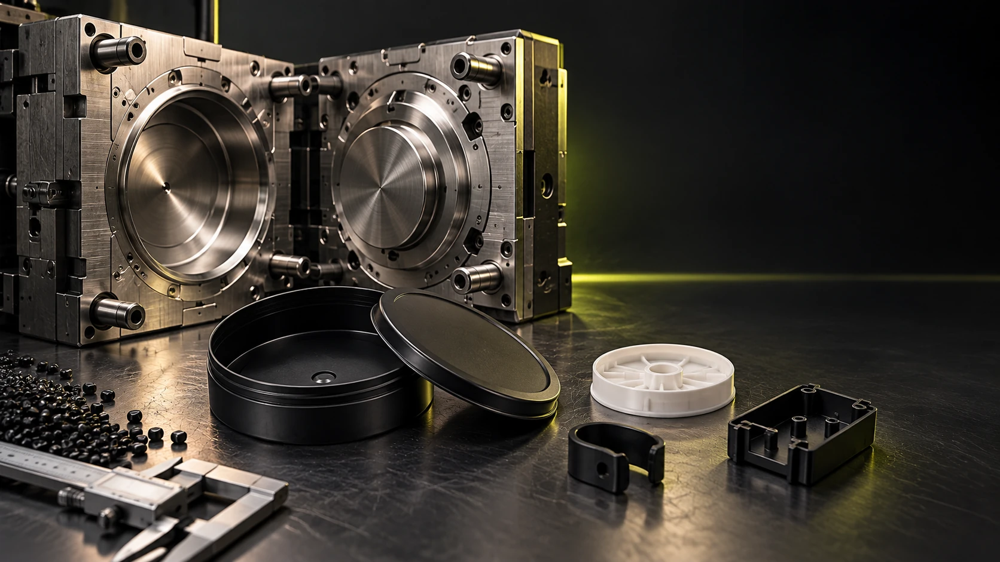

Manufacturing & tooling
One product.
Six decisions.
A practical route from the first requirement to a product ready for repeat production.
Explore tooling & ownership01DefineUse, dimensions, material, volume, finish and target market.
We begin with the job the product needs to do—not a catalog limitation.
02DesignProduct geometry, component relationships and technical drawings.
We choose a practical product platform or build the route around a new one.
03ToolTooling route, mold development, trials and refinements.
The mold turns the product idea into a repeatable manufacturing asset.
04ApprovePhysical samples, client review and commercial confirmation.
Samples make fit, feel, function and finish tangible before scale.
05ProduceMolding, finishing, assembly and quality checkpoints.
Controlled production converts an approved product into consistent output.
06MoveExport packing, freight coordination and repeat ordering.
Packing and delivery are planned as part of the product—not after it.

Tooling & the partnership
Your idea
becomes
an asset.
The mold defines the product. The agreement defines how we make it, maintain it and develop it together.
Explore the relationshipClear before we cut steel
Built around
your product.
Agreed together.
Existing tooling, a modified format or a dedicated mold: choose the route with clear responsibilities from the start.
Tooling route & ownership
Review what can use an existing platform and what needs new geometry. For dedicated molds, document the investment, ownership and production rights in the project agreement.
Changes & approval gates
Agree the drawing before mold making. Review physical samples before commercial production. Changes to dimensions, material or fit are assessed for cost, timing and tooling impact before proceeding.
Maintenance & storage
Define who maintains the mold, how it is stored and how repairs, wear and future production runs are handled.
Exclusivity & the long-term relationship
Define exclusivity, repeat-order expectations and any tooling transfer terms. As volume grows, review reserved capacity or a dedicated production line together.
Choose the production relationship.
Existing supply, client-owned tooling, reserved capacity or a dedicated line.